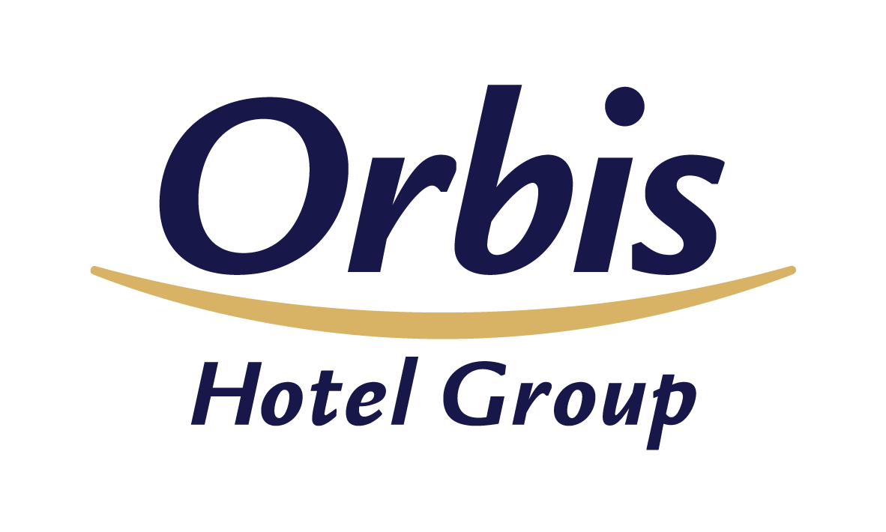

Intercompany Order Management Specialist
oct 2019 - present
Venlo, Limburg Province, Netherlands
- Daily order reporting and updates
- Overseeing and coordinating customer service activities based on customer requirements and needs
- Support in everyday operations-related tasks and processes (including purchasing, ordering, invoicing, repair service, logistics, and customer/supplier data management, reporting)
- Planning and coordinating logistic processes (planning daily ladings, transport orders and issuing lading documents)
- Supporting projects aimed at continuous improvement
- Supporting data migration
- Keeping track of the established processes and creating new ones
Warehouse Coordinator
may 2017 - oct 2019
Venlo, Limburg Province, Netherlands
- Responsibility for the shipping process of dangerous goods
- Supporting the internal Customer Operations (distribution in Europe)
- Supporting the Customer Service Office regarding complaints (Europe Business/Export Business)
Team Leader
apr 2016 - apr 2017
Venlo, Limburg Province, Netherlands
- Supporting the VAS department
- Cooperation with the NUTRICIA franchise

Various Positions
2008-2016
Poland-Germany
I began my career in 2008, efficiently serving various roles in the hotel and gastronomy sector. In my eight years of working in a diverse and fast-paced environment, I have gained practical knowledge regarding the service of the most demanding customers. Thanks to this experience I can adjust the customer service standards to ensure long-term relations and efficiently achieve the set goals based on the performance indicators.